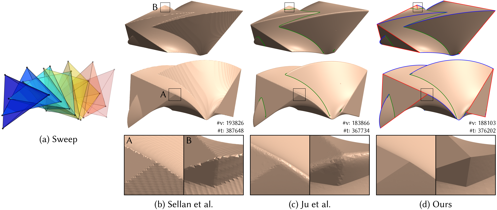
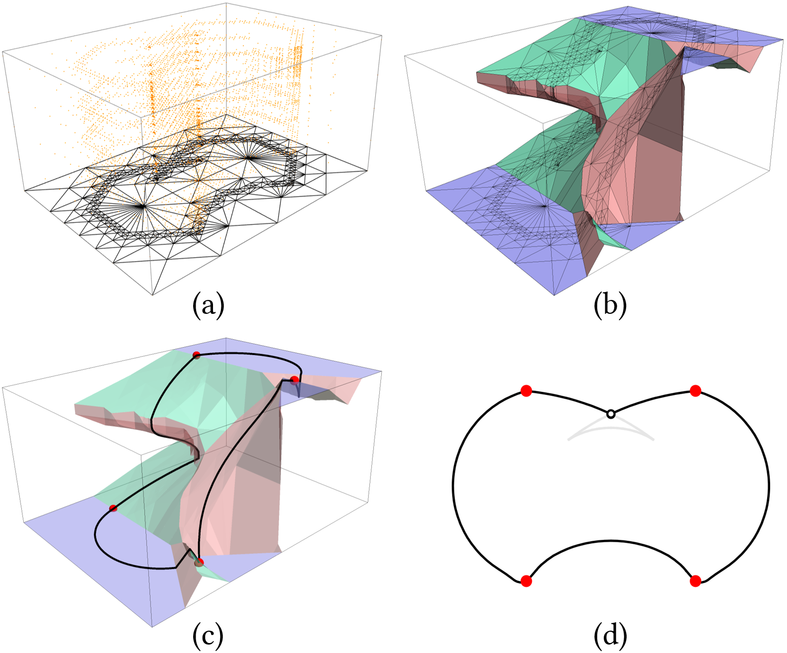

Piecewise-smooth input
Sharp edges and corners on a CSG shape generate a rich network of features on the sweep surface.
Computer Graphics · Geometric Computing
Washington University in St. Louis · Adobe Research
ACM Transactions on Graphics (Proc. SIGGRAPH Asia 2026)

Computing the sweep surface of a moving 3D solid is fundamental to geometric modeling, manufacturing, and robotics. We present the first feature-aware method for surfacing the sweep of a deforming piecewise-smooth shape. Our method accepts a 4D time-varying Constructive Solid Geometry (CSG) representation, allowing geometry and topology to change during a sweep. It generalizes lifted sweeping from smooth functions to CSG functions and introduces robust algorithms for discretizing multiple intersecting implicit surfaces in arbitrary dimensions. The resulting watertight meshes preserve the sharp features induced by shape corners, sweep endpoints, and self-intersections under both rigid and non-rigid motion.
Sharp edges and corners on a CSG shape generate a rich network of features on the sweep surface.
The method supports non-rigid motion, including geometry and topology changes throughout the sweep.
It produces a watertight mesh while retaining sweep-end features, swept-corner creases, and self-intersections.
Represent the sweep as a 4D implicit CSG.
Construct smooth and sharp contour components in space-time.
Discretize the intersecting surfaces robustly in 4D.
Project, trim, and label the final watertight mesh.

Browse the full-size figures below. Click any figure to open it at its original resolution.
@article{csgsweeps2026,
title = {CSG Sweeps: Feature-aware sweep surfacing of deformable CSGs},
author = {Xia, Jianjun and Ju, Yiwen and Zhou, Qingnan and Du, Xingyi and Carr, Nathan and Ju, Tao},
journal = {ACM Transactions on Graphics (Proc. SIGGRAPH Asia)},
year = {2026}
}